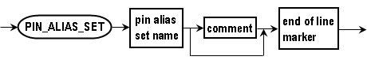

Pin alias set (PIN_ALIAS_SET)
This session is optional. You can specify the default pin alias set in the level equation set, timing equation set, and wavetables.
Syntax

Pin alias set name |
The default pin alias set. The pin alias defined in this alias set is used as the default in the equation set. |
Note You can use pin aliases from sets other than the default pin alias set,
by adding the set name in front of the pin alias:
<pin_alias_set_name>::<pin_alias>
.
If you use a package pin name, add "::" before it:
::<package_pin_name>.
Examples
Alias set: alias_set_1
In this example, the involved pins are:
clock, io_pin, and mode.
Alias |
Pin |
|---|---|
io_pin_1 |
io_pin |
mode_1 |
mode |
Alias set: alias_set_2
In this example, the involved pins are:
clock, io_pin, and mode.
Alias |
Pin |
|---|---|
io_pin_2 |
io_pin |
mode_2 |
mode |
The following is the timing equation set using the pin aliases.
EQNSET tim_eqn_set1 PIN_ALIAS_SET alias_set_1 TIMINGSET 1 PINS ::clock io_pin_1 alias_set_2::mode_2 ...
In
this example, the keyword PIN_ALIAS_SET specifies
alias_set_1 as the default alias set.
- To use a pin alias from the default alias set, specify the alias pin name without any prefix
(for example,
io_pin_1). - To use a pin alias from an alias set which is not the default set, explicitly specify the
alias set name (for example,
alias_set_2::mode_2). - To use a package pin name, add the prefix "::" (for example,
::clock).
Functional changes
- Introduced in SmarTest 6.5.2